한 칸에 하루가 들어갑니다. 오전 간식 → 점심(밥·국·찬 4) → 오후 간식 순서입니다. 간식은 동원이팜 11월 간식 식단표 기준이고, 점심은 구성 예시입니다.
오전·오후 간식은 동원이팜 11월 간식 식단표 그대로이고, 점심(밥·국·찬)은 구성을 보여 드리기 위한 예시입니다. 실제 식단은 시설마다 다르며, 각 시설에서 정합니다. 알레르기 유발 식품은 사전에 안내해 드립니다.
매달 새로 나오는 간식 식단표, 소개서, 레시피북입니다. 눌러서 크게 보세요. 지난 달 자료는 아래 링크에서 더 볼 수 있습니다.
밥·국·주찬·부찬·간식, 다섯 가지를 기준으로 식자재 구성을 제안합니다. 센터마다 기준이 다르므로 연령과 시설 식단에 맞춰 조정할 수 있습니다.

실제 식단은 시설마다 다르며, 각 시설에서 정합니다.
영유아 전용 브랜드 이팜키즈와 시설 맞춤 be chef. 라인업에서 고릅니다. 규격·함량·보관 기준을 확인해 아이들이 먹기 좋게 구성합니다.
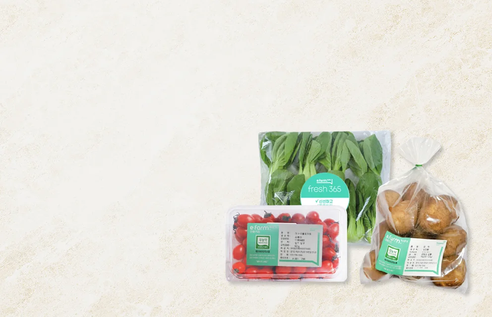
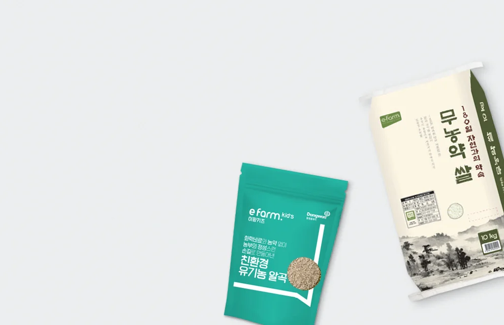
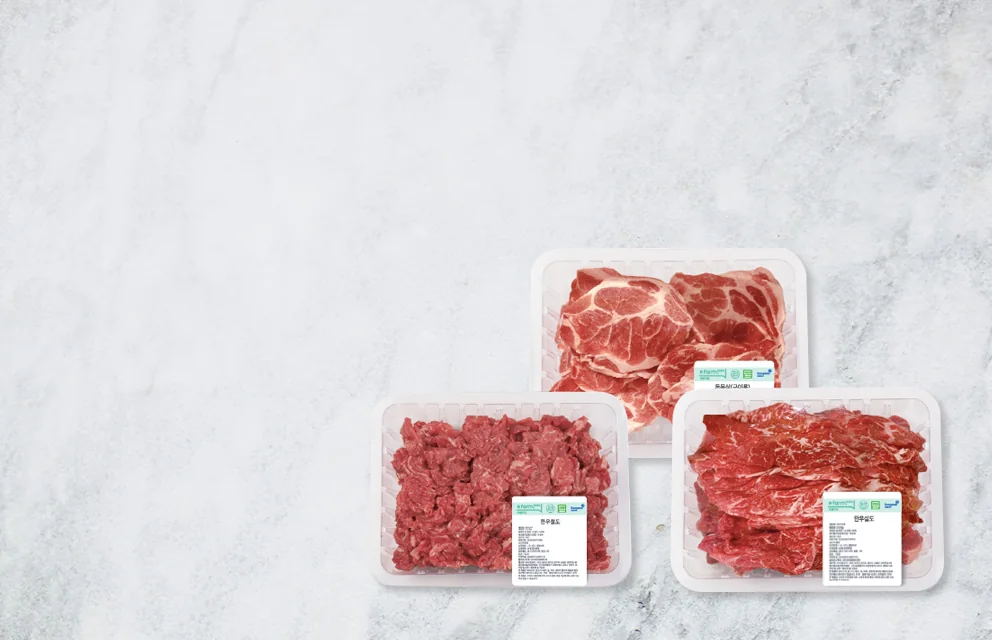
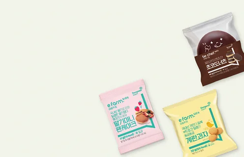
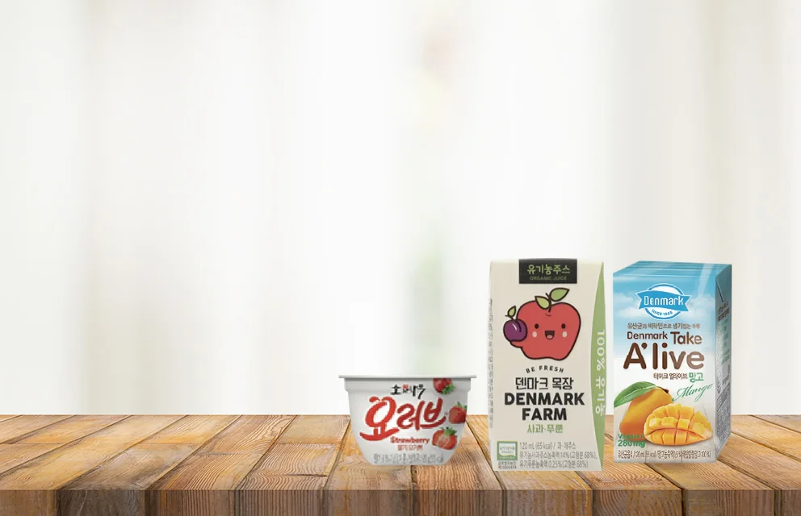
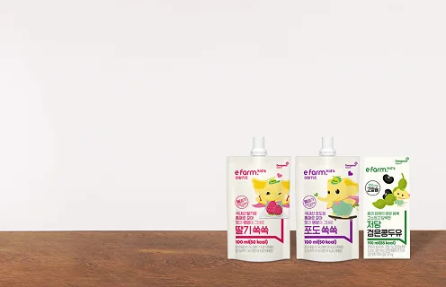
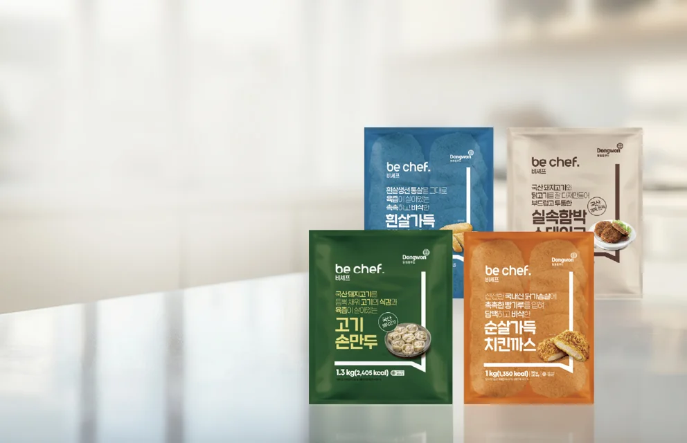
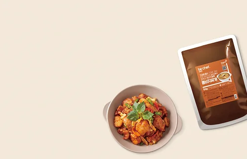
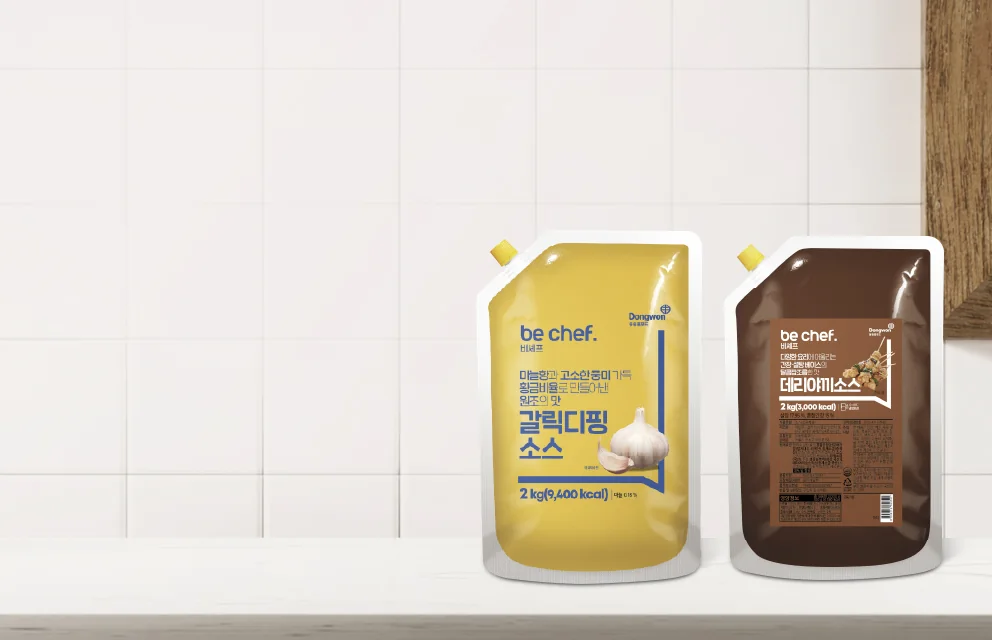
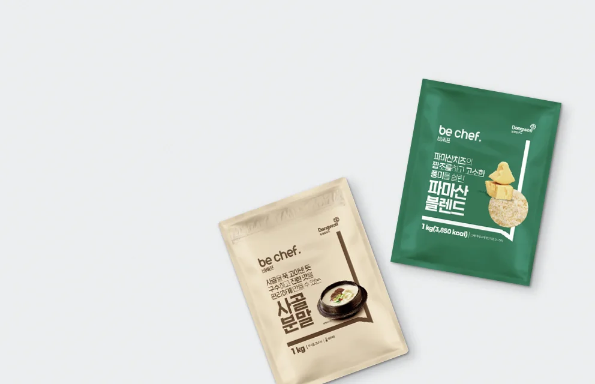
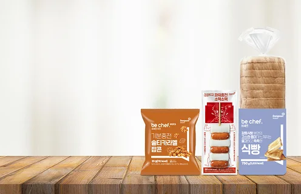
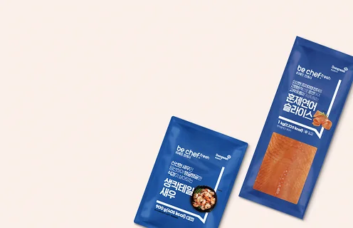
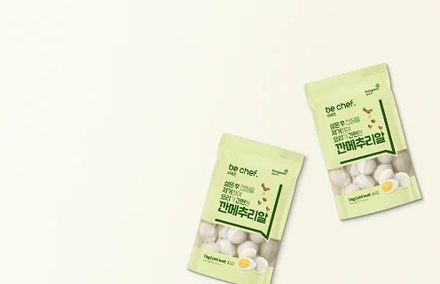
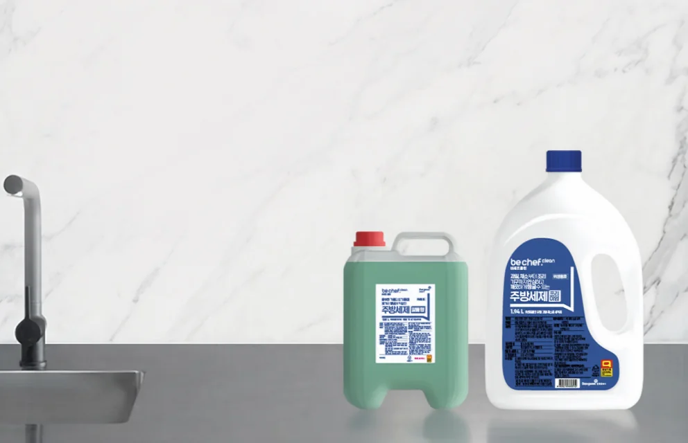
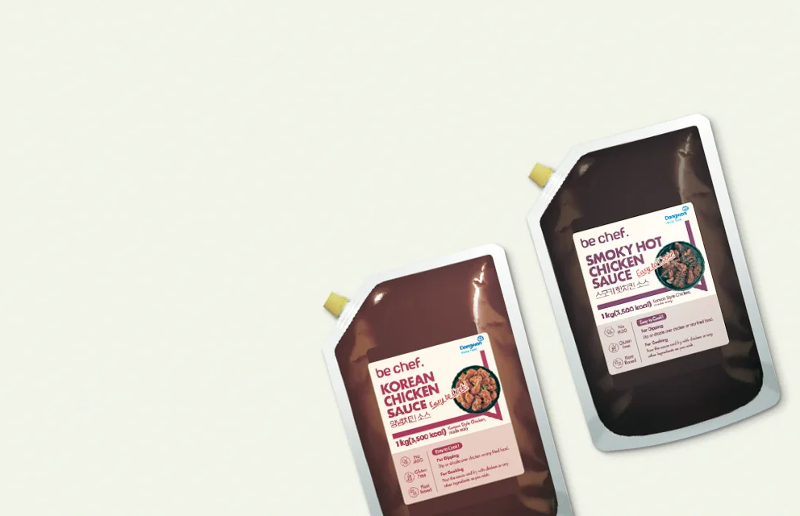
가격은 상담 시 안내합니다. 품목은 월별로 교체됩니다.